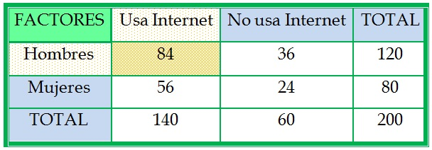
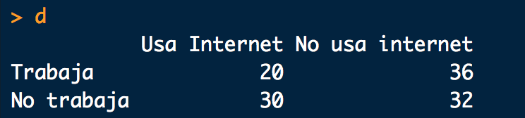
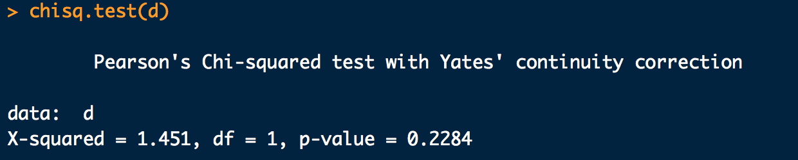
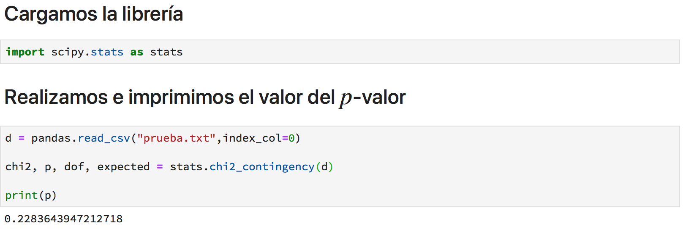

Capítulo 5 Regresión logística
La regresión logística nos da respuesta a la siguiente interrogante, ¿Que hacer cuando la variable dependiente es dicotómica?. Claramente en los modelos lineales esto no se puede aplicar pues la variable dependiente debe ser continua. De igual manera la otra interrogante importante es ¿Que hacer cuando las variables independiente son categóricas?. La regresión logística nos da la flexibilidad necesaria para incluir este tipo de variables. La regresión logística a diferencia de la regresión lineal no calcula directamente el valor de la variable categórica, sino la probilidad de que el evento ocurra, por ejemplo, si estamos interesados en el evento cara o cruz, un modelo logístico para este tipo de modelos nos dará la probabilida de que ocurra cara o cruz.
5.1 Supuestos de la regresión logística.
La regresión logística es flexible con respecto a supuestos como normalidad o la continuidad de las variables. Una de las hipotesis que debemos verificar es la de no existencia de multicolinealidad entre las distintas variables continuas y la correlación entre las variables independientes y la variable dependiente. A continuación veremos como responder a estas interrogativas.
5.2 Multicolinealidas entre variables independientes.
Al igual que en la regresión lineal debemos evitar, variables independientes con alta correlación. Debemos realizar el mismo procedimiento visto en el capítulo anterior.
5.3 Detectar correlación entre variables categóricas
Una de las primeras cosas que debemos ver es la independecia entre las variables independientes categoricas y la dependencia entre la variable dependiente y las variables categóricas independientes. Para ver esto haremos uso de las tablas de contigencia.
Una tabla de contogencia es la forma mas facíl de detectar relaciones entre variables categóricas, en estas tablas se definen las variables en filas y columnas y se ven las distintas proporciones entre las categorías de las variables. En la siguiente imagen se muestra un ejemplo de tabla de contigencia.

En las columnas la variable hace referencia al uso del internet y en las filas las variables hacen referencia al sexo.
Para detectar si dos variables estan o no correlacionadas usaremos la prueba chi-cuadrado que contraste la independencia entre las variables, es decir, si el \(p\)-valor es bajo estamos encontrando evidencia de inpendecia entre los factores, en caso contrario podemos suponer la existencia de cierta relación entre las variables.
En la siguiente imagem se muestra una tabla de contigencia, al la cual le aplicaremos la prueba chi-cuadrado, para contrastar la independencia entre el uso de internet y el estar empleado.

5.3.1 Prueba chi-cuadrado en R
Para realizar la prueba usamos la función * chisq.test()* y obtenemos el siguiente resultado

El valor que nos interesa es el \(p\)-valor, el cual a no ser menor a \(0.05\) nos indica una posible relación entre las variables, en general, si el \(p\)-valor es cercano a uno podemos pensar en la posible relación entre las variables.
5.3.2 Prueba chi-cuadrado en Python
Para realizar la prueba chi-cuadrado en Python usaremos la librería scipy y usaremos la función .chi2_contingency(). A continuación mostramos como hacerlo:

5.4 Detectar correlación entre variables categóricas y variables cuantitativas.
Para detectar un posible efecto entre la correlación de una variable categorica y una variable continua usaremos un estadístico llamado \(d\) de Cohen, el cual se construye a partir de las diferencias de las medias de la segmentación a traves de la variable categórica. De pendiendo del valor del estadístico diremos si existe o no un efecto de la variable categórica y la variable cuantitativa, en general si el valor es menor \(0,5\) diremos que hay un efecto debil, si el valor esta entre \(0,5\) y \(0,8\) diremos que hay un efecto moderado y si es mayor a \(0.8\) diremos que hay un efecto fuerte.